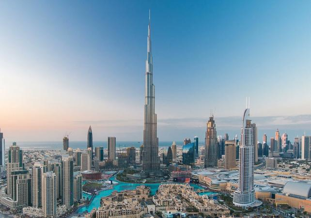

My favourite places to see in Dubai
Burj Khalifa
Tallest of the Supertall Not only is Burj Khalifa the world's tallest building but it has also broken two other impressive records: tallest structure, previously held by the KVLY-TV mast in Blanchard, North Dakota, and tallest free-standing structure, previously held by Toronto's CN Tower.
Construction of the Burj Khalifa began in 2004, with the exterior completed five years later in 2009. The primary structure is reinforced concrete and some of the structural steel for the building originated from the Palace of the Republic in East Berlin, the former East German parliament. The building was opened in 2010 as part of a new development called Downtown Dubai. It was designed to be the centerpiece of large-scale, mixed-use development. The decision to construct the building was based on the government's decision to diversify from an oil-based economy, and for Dubai to gain international recognition. The building is named in honor of the ruler of Abu Dhabi and president of the United Arab Emirates, Khalifa bin Zayed Al Nahyan; Abu Dhabi and the UAE government lent Dubai money to pay its debts. The building broke numerous height records, including its designation as the tallest building in the world. Burj Khalifa was designed by a team led by Adrian Smith of Skidmore, Owings & Merrill, the firm that designed the Sears Tower in Chicago, a previous record holder for the world's tallest building. Hyder Consulting was chosen to be the supervising engineer with NORR Group Consultants International Limited chosen to supervise the architecture of the project. The design is derived from the Islamic architecture of the region, such as in the Great Mosque of Samarra. The Y-shaped tripartite floor geometry is designed to optimize residential and hotel space. A buttressed central core and wings are used to support the height of the building. Although this design was derived from Tower Palace III, the Burj Khalifa's central core houses all vertical transportation with the exception of egress stairs within each of the wings.[7] The structure also features a cladding system which is designed to withstand Dubai's hot summer temperatures. It contains a total of 57 elevators and 8 escalators. At a certain point in the architectural and engineering process, the original Emaar developers experienced financial problems, and required more money and economic funding. Sheikh Khalifa, the ruler of the United Arab Emirates, granted monetary aid and funding, hence the changing of the name to "Burj Khalifa". The concept of profitability derived from building high density developments and malls around the landmark has proven successful. Its surrounding malls, hotels and condominiums in Downtown Dubai have generated the most revenue from the project as a whole, while the Burj Khalifa itself made little or no profit. Critical reception to Burj Khalifa has been generally positive, and the building has received many awards. However, there were numerous complaints concerning migrant workers from South Asia who were the primary building labour force. These centered on low wages and the practice of confiscating passports until duties were complete.